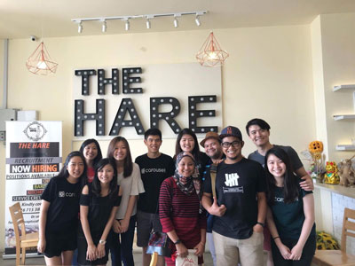
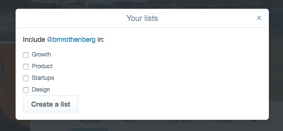
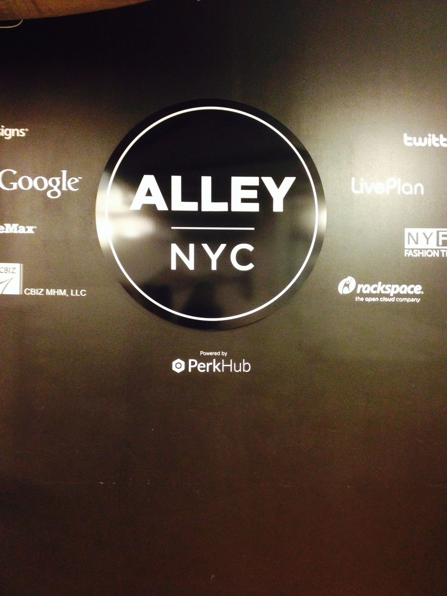

Product management • Growth
Hello!
I'm currently building products at Amazon Japan. Previously spent most of my time in growth, community building and driving ecommerce capabilities at Carousell and TikTok.
When I'm free, I make videos of my life in Japan as a way to remember them.



WORKING PRINCIPLES
- Start with real needs.
- Make trade-offs explicit.
- Ship to learn.
Writing.
I occasionally write about what I'm thinking or document learnings I want to remember.
Browse all writing